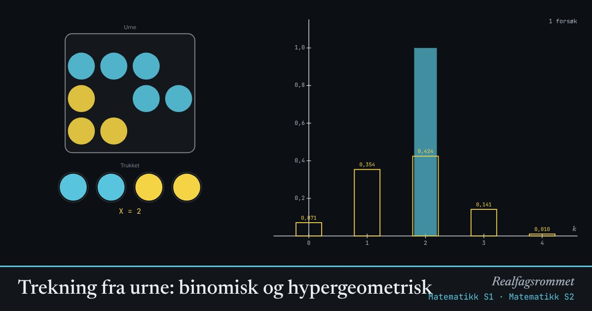

Trekning fra urne: binomisk og hypergeometrisk
Trekker vi kuler med tilbakelegging, er antall gule kuler binomisk fordelt. Uten tilbakelegging er det hypergeometrisk. Søylene viser simuleringen, de gule rammene teorien.
Start animasjonen
Formler
Om animasjonen
Hvert forsøk trekker kuler, og vi teller hvor mange som er gule. Det tallet er den stokastiske variabelen .
Med tilbakelegging er sannsynligheten for gul den samme i hvert trekk. Uten tilbakelegging endrer den seg etter hvert som kuler forsvinner.
Forventningsverdien er lik i begge tilfeller, men uten tilbakelegging blir spredningen litt mindre.
Jo flere forsøk du gjør, jo nærmere kommer søylene de gule rammene. Det er store talls lov.
Prøv dette
- Finn sannsynligheten for å trekke nøyaktig 2 gule med 12 kuler, 5 gule og 4 trekk uten tilbakelegging. Sjekk med simuleringen.
- Gjør urnen stor (30 kuler). Hvorfor blir de to fordelingene nesten like?
- Hvor mange forsøk trengs før simuleringen ligner teorien?
- Lotto: hvorfor er det hypergeometrisk og ikke binomisk?
Kompetansemål
- Matematikk S1: Kombinatorikk og sannsynlighet
- Matematikk S1: Binomisk og hypergeometrisk fordeling
- Matematikk S1: Simulering av stokastiske forsøk
- Matematikk S2: Forventningsverdi, varians og standardavvik